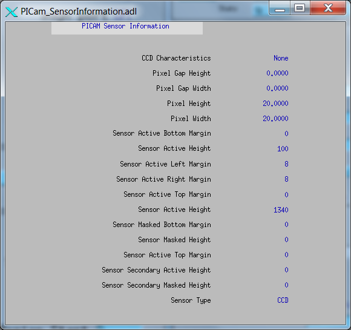

| Implementation of Parameters in asynNDArrayDriver.h and ADDriver.h, and EPICS Record Definitions in ADBase.template and NDFile.template | ||
| Parameter index variable | EPICS record name | Description |
|---|---|---|
| Parameter Definitions in ADPICam.cpp and EPICS Record Definitions in PICam.template | ||||||
| Parameter index variable | asyn interface | Access | Description | drvInfo string | EPICS record name | EPICS record type |
|---|---|---|---|---|---|---|
| Driver Parameters | ||||||
| PICAM_VersionNumber | asynOctet | r/o | PICAM_VERSION_NUMBER |
$(P)$(R)VersionNumber | stringin | |
| PICAM_AvailableCameras | asynInt32 | r/w | PICAM_AVAILABLE_CAMERAS |
$(P)$(R)AvailableCameras $(P)$(R)AvailableCameras_RBV |
mbbo mbbi |
|
| PICAM_CameraInterface | asynOctet | r/o | PICAM_CAMERA_INTERFACE |
$(P)$(R)CameraInterface | stringin | |
| PICAM_SensorName | asynOctet | r/o | PICAM_SENSOR_NAME |
$(P)$(R)SensorName | stringin | |
| PICAM_SerialNumber | asynOctet | r/o | PICAM_SERIAL_NUMBER |
$(P)$(R)CamSerialNumber | stringin | |
| PICAM_FirmwareRevision | asynOctet | r/o | PICAM_FIRMWARE_REVISION |
$(P)$(R)FirmwareRevision | stringin | |
| PICAM_UnavailableCameras | asynInt32 | r/w | PICAM_UNAVAILABLE_CAMERAS |
$(P)$(R)UnavailableCameras $(P)$(R)UnavailableCameras_RBV |
mbbo mbbi |
|
| PICAM_CameraInterfaceUnavailable | asynOctet | r/o | PICAM_CAMERA_INTERFACE_UNAVAILABLE |
$(P)$(R)CameraInterfaceUnavailable | stringin | |
| PICAM_SensorNameUnavailable | asynOctet | r/o | PICAM_SENSOR_NAME_UNAVAILABLE |
$(P)$(R)SensorNameUnavailable | stringin | |
| PICAM_SerialNumberUnavailable | asynOctet | r/o | PICAM_SERIAL_NUMBER_UNAVAILABLE |
$(P)$(R)CamSerialNumUnavailable | stringin | |
| PICAM_FirmwareRevisionUnavailable | asynOctet | r/o | PICAM_FIRMWARE_REVISION_UNAVAILABLE |
$(P)$(R)FirmwareRevisionUnavailable | stringin | |
| Camera Parameters | ||||||
| Shutter Timing | ||||||
| Intensifier | ||||||
| PICAM_BracketGating | asynInt32 | r/w | PICAM_BRACKET_GATING |
$(P)$(R)BracketGating $(P)$(R)BracketGating_RBV |
bo bi |
|
| PICAM_CustomModulationSequence | TBD | PICAM_CUSTOM_MODULATION_SEQUENCE | ||||
| PICAM_DifEndingGate | TBD | PICAM_DIF_ENDING_GATE | ||||
| PICAM_DifStartingGate | TBD | r/w | PICAM_DIF_STARTING_GATE | |||
| PICAM_EMIccdGain | asynInt32 | r/w | PICAM_EMI_CCD_GAIN |
$(P)$(R)EMIccdGain $(P)$(R)EMIccdGain_RBV |
longout longin |
|
| PICAM_EMIccdGainControlMode | asynInt32 | r/w | PICAM_EMI_CCD_GAIN_CONTROL_MODE |
$(P)$(R)EMIccdGainControlMode $(P)$(R)EMIccdGainControlMode_RBV |
mbbo mbbi |
|
| PICAM_EnableIntensifier | asynInt32 | r/w | PICAM_ENABLE_INTENSIFIER |
$(P)$(R)ENABLE_INTENSIFIER $(P)$(R)ENABLE_INTENSIFIER_RBV |
bo bi |
|
| PICAM_EnableModulation | asynInt32 | r/w | PICAM_ENABLE_MODULATION |
$(P)$(R)EnableModulation $(P)$(R)EnableModulation_RBV |
bo bi |
|
| PICAM_GatingMode | asynInt32 | r/w | PICAM_GATING_MODE |
$(P)$(R)GatingMode $(P)$(R)GatingMode_RBV |
mbbo mbbi |
|
| PICAM_GatingSpeed | asynInt32 | r/o | PICAM_GATING_SPEED | $(P)$(R)GatingSpeed | mbbo | |
| PICAM_IntensifierDiameter | asynFloat64 | r/o | PICAM_INTENSIFIER_DIAMETER | $(P)$(R)IntensifierDiameter | ai | |
| PICAM_IntensifierGain | asynInt32 | r/w | PICAM_INTENSIFIER_GAIN | $(P)$(R)IntensiferGain | longin | |
| PICAM_IntensifierOptions | asynInt32 | r/o | PICAM_INTENSIFIER_OPTIONS | $(P)$(R)IntensifierOptions | mbbi | |
| PICAM_IntensifierStatus | asynInt32 | r/o | PICAM_INTENSIFIER_STATUS | $(P)$(R)IntensifierStatus | mbbi | |
| PICAM_ModulationDuration | asynFloat64 | r/w | PICAM_MODULATION_DURATION |
$(P)$(R)ModulationDuration $(P)$(R)ModulationDuration_RBV |
ai ao |
|
| PICAM_ModulationFrequency | asynFloat64 | r/w | PICAM_MODULATION_FREQUENCY |
$(P)$(R)ModulationFrequency $(P)$(R)ModulationFrequency_RBV |
ai ao |
|
| PICAM_PhosphorDecayDelay | asynFloat64 | r/w | PICAM_PHOSPHOR_DECAY_DELAY | $(P)$(R)PhosphorDecayDelay | ai | |
| PICAM_PhosphorDecayDelayResolution | asynInt32 | r/w | PICAM_PhosphorDecayDelayResolution |
$(P)$(R)PhosphorDecayDelayResolution $(P)$(R)PhosphorDecayDelayResolution_RBV |
bi | |
| PICAM_PhosphorType | asynInt32 | r/o | PICAM_PhosphorType | $(P)$(R)PhosphorType | mbbi | |
| PICAM_PhotocathodeSensitivity | asynInt32 | r/o | PICAM_PHOTOCATHODE_SENSITIVITY | $(P)$(R)PhotocathodeSensitivity | mbbi | |
| PICAM_RepetitiveGate | TBD Pulse | r/w | PICAM_REPETITIVE_GATE | |||
| PICAM_RepetitiveModulation | asynFloat64 | r/w | PICAM_REPETITVE_MODULATION |
$(P)$(R)RepetitiveModulation $(P)$(R)RepetitiveModulation_RBV |
ai ao |
|
| PICAM_SequentialStartingModulationPhase | asynFloat64 | r/w | PICAM_SEQUENTIAL_STARTING_MODULATION_PHASE |
$(P)$(R)SequentialStartingModulationPhase $(P)$(R)SequentialStartingModulationPhase_RBV |
ai ao |
|
| PICAM_SequentialEndingModulationPhase | asynFloat64 | r/w | PICAM_SEQUENTIAL_ENDING_MODULATION_PHASE |
$(P)$(R)SequentialEndingModulationPhase $(P)$(R)SequentialEndingModulationPhase_RBV |
bi | |
| PICAM_SequentialEndingGate | TBD Pulse | r/w | PICAM_SEQUENTIAL_ENDING_GATE | |||
| PICAM_SequentialGateStepCount | asynInt32 | r/w | PICAM_SEQUENTIAL_GATE_STEP_COUNT |
$(P)$(R)SequentialGateStepCount $(P)$(R)SequentialGateStepCount_RBV |
longout longin |
|
| PICAM_SequentialGateStepIterations | asynInt32 | r/w | PICAM_SEQUENTIAL_GATE_STEP_ITERATIONS |
$(P)$(R)SequentialGateStepIterations $(P)$(R)SequentialGateStepIterations |
longout longin |
|
| PICAM_SequentialStartingGate | TBD Pulse | r/w | PICAM_SEQUENTIAL_STARTING_GATE | |||
| Analog To Digital Conversion | ||||||
| PICAM_AdcAnalogGain | asynInt32 | r/w | PICAM_ADC_ANALOG_GAIN |
$(P)$(R)AdcAnalogGain $(P)$(R)AdcAnalogGain_RBV |
mbbo mbbi |
|
| PICAM_AdcBitDepth | asynInt32 | r/w | PICAM_ADC_BIT_DEPTH |
$(P)$(R)AdcBitDepth $(P)$(R)AdcBitDepth_RBV |
mbbo mbbi |
|
| PICAM_AdcEMGain | asynInt32 | r/w | PICAM_ADC_EM_GAIN |
$(P)$(R)AdcEMGain $(P)$(R)AdcEMGain_RBV |
longin longout |
|
| PICAM_AdcQuality | asynInt32 | r/w | PICAM_ADC_QUALITY |
$(P)$(R)AdcQuality $(P)$(R)AdcQuality_RBV |
mbbo mbbi |
|
| PICAM_AdcSpeed | asynInt32 | r/w | PICAM_ADC_SPEED |
$(P)$(R)AdcSpeed $(P)$(R)AdcSpeed_RBV |
mbbo mbbi |
|
| PICAM_CorrrectPixelBias | asynInt32 | r/w | PICAM_CORRECT_PIXEL_BIAS |
$(P)$(R)CorrectPixelBias $(P)$(R)CorrectPixelBias_RBV |
mbbo mbbi |
|
| Hardware I/O | ||||||
| PICAM_AuxOutput | TBD Pulse | r/w | PICAM_AUX_OUTPUT | |||
| PICAM_EnableModulationOutputSignal | asynInt32 | r/o | PICAM_ENABLE_MODULATION_OUTPUT_SIGNAL |
$(P)$(R)EnableModulationOutputSignal $(P)$(R)EnableModulationOutputSignal_RBV |
bo bi |
|
| PICAM_ModulationOutputSignalFreq | asynFloat64 | r/w | PICAM_MODULATION_OUTPUT_SIGNAL_FREQUENCY |
$(P)$(R)ModulationOutputSignalFreq $(P)$(R)ModulationOutputSignalFreq |
ao ai |
|
| PICAM_ModulationOutputSignalAmpl | asynFloat64 | r/w | PICAM_MODULATION_OUTPUT_SIGNAL_AMPLITUDE |
$(P)$(R)ModulationOutputSignalAmpl $(P)$(R)ModulationOutputSignalAmpl_RBV |
ao ai |
|
| PICAM_EnableSyncMaster | asynInt32 | r/w | PICAM_ENABLE_SYNC_MASTER |
$(P)$(R)EnableSyncMaster $(P)$(R)EnableSyncMaster_RBV |
bo bi |
|
| PICAM_InvertOutputSignal | asynInt32 | r/w | PICAM_INVERT_OUTPUT_SIGNAL |
$(P)$(R)InvertOutputSignal $(P)$(R)InvertOutputSignal_RBV |
bo bi |
|
| PICAM_SyncMaster2Delay | asynFloat64 | r/w | PICAM_SYNC_MASTER2_DELAY |
$(P)$(R)SyncMaster2Delay $(P)$(R)SyncMaster2Delay_RBV |
ao ai |
|
| PICAM_TriggerCoupling | asynInt32 | r/w | PICAM_TRIGGER_COUPLING |
$(P)$(R)TriggerCoupling $(P)$(R)TriggerCoupling_RBV |
mbbo mbbi |
|
| PICAM_TriggerDetermination | asynInt32 | r/w | PICAM_TRIGGER_DETERMINATION |
$(P)$(R)TriggerDetermination $(P)$(R)TriggerDetermination_RBV |
mbbo mbbi |
|
| PICAM_TriggerFrequency | asynFloat64 | r/w | PICAM_TRIGGER_FREQUENCY |
$(P)$(R)TriggerFrequency $(P)$(R)TriggerFrequency_RBV |
ao ai |
|
| PICAM_TriggerResponse |
Mapped to ADTriggerMode from ADDriver |
$(P)$(R)TriggerMode $(P)$(R)TriggerMode_RBV from ADDriver |
mbbo mbbi |
|||
| PICAM_TriggerSource | asynInt32 | r/w | PICAM_TRIGGER_SOURCE |
$(P)$(R)TriggerSource $(P)$(R)TriggerSource_RBV |
mbbo mbbi |
|
| PICAM_TriggerTermination | asynInt32 | r/w | PICAM_TRIGGER_TERMINATION |
$(P)$(R)TriggerTermination $(P)$(R)TriggerTermination_RBV |
mbbo mbbi |
|
| PICAM_TriggerThreshold | asynFloat64 | r/w | PICAM_TRIGGER_THRESHOLD |
$(P)$(R)TriggerThreshold $(P)$(R)TriggerThreshold_RBV |
ao ai |
|
| ReadoutControl | ||||||
| PICAM_Accumulations | asynInt32 | r/w | PICAM_ACCUMULATIONS |
$(P)$(R)Accumulations $(P)$(R)Accumulations_RBV |
longout longin |
|
| PICAM_EnableNondestructiveReadout | asynInt32 | r/w | PICAM_ENABLE_NONDESTRUCTIVE_READOUT |
$(P)$(R)EnableNondestructiveReadout $(P)$(R)EnableNondestructiveReadout_RBV |
bo bi |
|
| PICAM_KineticsWindowHeight | asynInt32 | r/w | PICAM_KINETICS_WINDOW_HEIGHT |
$(P)$(R)KineticsWindowHeight $(P)$(R)KineticsWindowHeight_RBV |
longout longin |
|
| PICAM_NondestructiveReadoutPeriod | asynFloat64 | r/w | PICAM_NONDESTRUCTIVE_READOUT_PERIOD |
$(P)$(R)NondestructiveReadoutPeriod $(P)$(R)NondestructiveReadoutPeriod_RBV |
ao ai |
|
| PICAM_ReadoutControlMode | asynInt32 | r/w | PICAM_READOUT_CONTROL_MODE |
$(P)$(R)ReadoutControlMode $(P)$(R)ReadoutControlMode_RBV |
mbbo mbbi |
|
| PICAM_ReadoutOrientation | asynInt32 | r/o | PICAM_READOUT_ORIENTATION | $(P)$(R)READOUT_ORIENTATION | bi | |
| PICAM_ReadoutPortCount | asynInt32 | r/w | PICAM_READOUT_PORT_COUNT |
$(P)$(R)ReadoutPortCount $(P)$(R)ReadoutPortCount_RBV |
mbbo mbbi |
|
| PICAM_ReadoutTimeCalculation | asynFloat64 | r/o | PICAM_READOUT_TIME_CALCULATION | $(P)$(R)ReadoutTimeCalc | ai | |
| PICAM_VerticalShiftRate | asynInt32 | r/w | PICAM_VERTICAL_SHIFT_RATE |
$(P)$(R)VerticalShiftRate $(P)$(R)VerticalShiftRate_RBV |
bi | |
| Data Acquisition | ||||||
| PICAM_DisableDataFormatting | asynInt32 | r/w | PICAM_DISABLE_DATA_FORMATTING |
$(P)$(R)DisableDataFormatting $(P)$(R)DisableDataFormatting_RBV |
bo bi |
|
| PICAM_ExactReadoutCountMaximum | asynInt32 | r/o | PICAM_EXACT_READOUT_COUNT_MAXIMUM | $(P)$(R)ExactReadoutCountMaximum | longin | |
| PICAM_FrameRateCalc | asynFloat64 | r/o | PICAM_FRAME_RATE_CALC | $(P)$(R)FrameRateCalc | ai | |
| PICAM_FrameSize | asynInt32 | r/o | PICAM_FRAME_SIZE | $(P)$(R)FrameSize | longin | |
| PICAM_FramesPerReadout | asynInt32 | r/o | PICAM_FRAMES_PER_READOUT | $(P)$(R)FramesPerReadout | bi | |
| PICAM_FrameStride | asynInt32 | r/o | PICAM_FRAME_STRIDE | $(P)$(R)FrameStride | longin | |
| PICAM_FrameTrackingBitDepth | asynInt32 | r/w | PICAM_FRAME_TRACKING_BIT_DEPTH |
$(P)$(R)FrameTrackingBitDepth $(P)$(R)FrameTrackingBitDepth_RBV |
mbbi mbbi |
|
| PICAM_GateTracking | asynInt32 | r/w | PICAM_GATE_TRACKING |
$(P)$(R)GateTracking $(P)$(R)GateTracking_RBV |
mbbo mbbi |
|
| PICAM_GateTrackingBitDepth | asynInt32 | r/w | PICAM_GATE_TRACKING_BIT_DEPTH |
$(P)$(R)GateTrackingBitDepth $(P)$(R)GateTrackingBitDepth_RBV |
mbbo mbbi |
|
| PICAM_ModulationTracking | asynInt32 | r/w | PICAM_MODULATION_TRACKING |
$(P)$(R)ModulationTracking $(P)$(R)ModulationTracking_RBV |
mbbo mbbi |
|
| PICAM_ModulationTrackingBitDepth | asynInt32 | r/w | PICAM_MODULATION_TRACKING_BIT_DEPTH |
$(P)$(R)ModulationTrackingBitDepth $(P)$(R)ModulationTrackingBitDepth_RBV |
mbbo mbbi |
|
| PICAM_NormalizeOrientation | asynInt32 | r/w | PICAM_NORMALIZE_ORIENTATION | $(P)$(R)NormalizeOrientation |
bo bi |
|
| PICAM_OnlineReadoutRateCalc | asynFloat64 | r/o | PICAM_ONLINE_READOUT_RATE_CALC | $(P)$(R)OnlineReadoutRateCalc | ai | |
| PICAM_Orientation | asynInt32 | r/o | PICAM_ORIENTATION | $(P)$(R)Orientation | bi | |
| PICAM_PhotonDetectionMode | asynInt32 | r/w | PICAM_PHOTON_DETECTION_MODE | $(P)$(R)PhotonDetectionMode |
mbbo mbbi |
|
| PICAM_PhotonDetectionThreshold | asynFloat64 | r/w | PICAM_PHOTON_DETECTION_THRESHOLD |
$(P)$(R)PhotonDetectionThreshold $(P)$(R)PhotonDetectionThreshold |
ao ai |
|
| PICAM_PixelBitDepth | asynInt32 | r/o | PICAM_PIXEL_BIT_DEPTH | $(P)$(R)PixelBitDepth | longin | |
| PICAM_PixelFormat | asynInt32 | r/w | PICAM_PIXEL_FORMAT |
$(P)$(R)PixelFormat $(P)$(R)PixelFormat_RBV |
mbbo mbbi |
|
| PICAM_ReadoutCount | asynInt32 | r/w | PICAM_READOUT_COUNT |
$(P)$(R)ReadoutCount $(P)$(R)ReadoutCount_RBV |
longout longin |
|
| PICAM_ReadoutRateCalc | asynFloat64 | r/o | PICAM_READOUT_RATE_CALC | $(P)$(R)ReadoutRateCalc | ai | |
| PICAM_ReadoutStride | asynInt32 | r/o | PICAM_READOUT_STRIDE | $(P)$(R)ReadoutStride | longin | |
| ROIs | Handled by ADDriver params & passed into the Rois parameter | r/w | ||||
| PICAM_TimeStampBitDepth | asynInt32 | r/w | PICAM_TIME_STAMP_BIT_DEPTH |
$(P)$(R)TimeStampBitDepth $(P)$(R)TimeStampBitDepth_RBV |
mbbo mbbi |
|
| PICAM_TimeStampResolution | asynInt32 | r/w | PICAM_TIME_STAMP_RESOLUTION |
$(P)$(R)TimeStampResolution $(P)$(R)TimeStampResolution_RBV |
mbbo mbbi |
|
| PICAM_TimeStamps | asynInt32 | r/w | PICAM_TIME_STAMPS |
$(P)$(R)TimeStamps $(P)$(R)TimeStamps_RBV |
mbbo mbbi |
|
| PICAM_TrackFrames | asynInt32 | r/o | PICAM_TRACK_FRAMES |
$(P)$(R)TrackFrames $(P)$(R)TrackFrames_RBV |
bi | |
| Sensor Information | ||||||
| PICAM_CcdCharacteristics | asynInt32 | r/o | PICAM_CCD_CHARACTERISTICS | $(P)$(R)CcdCharacteristics | bi | |
| PICAM_PixelGapHeight | asynFloat64 | r/o | PICAM_PIXEL_GAP_HEIGHT | $(P)$(R)PixelGapHeight | ai | |
| PICAM_PixelGapWidth | asynFloat64 | r/o | PICAM_PIXEL_GAP_WIDTH | $(P)$(R)PixelGapWidth | ai | |
| PICAM_PixelHeight | asynFloat64 | r/o | PICAM_PIXEL_HEIGHT | $(P)$(R)PixelWidth | ai | |
| PICAM_PixelWidth | asynFloat64 | r/o | PICAM_PIXEL_WIDTH | $(P)$(R)PixelWidth | ai | |
| PICAM_SensorActiveBottomMargin | asynInt32 | r/o | PICAM_SENSOR_ACTIVE_BOTTOM_MARGIN | $(P)$(R)SensorActiveBottomMargin | longin | |
| PICAM_SensorActiveHeight | Mapped to ADDriver ADMaxSizeY | r/o | longin | |||
| PICAM_SensorActiveLeftMargin | asynInt32 | r/o | PICAM_SENSOR_ACTIVE_LEFT_MARGIN | $(P)$(R)SensorActiveLeftMargin | longin | |
| PICAM_SensorActiveRightMargin | asynInt32 | r/o | PICAM_SENSOR_ACTIVE_RIGHT_MARGIN | $(P)$(R)SensorActiveRightMargin | longin | |
| PICAM_SensorActiveTopMargin | asynInt32 | r/o | PICAM_SENSOR_ACTIVE_TOP_MARGIN | $(P)$(R)SensorActiveTopMargin | longin | |
| PICAM_SensorActiveWidth | Mapped to ADDriver ADMaxSizeY | r/o | ||||
| PICAM_SensorMaskedBottomMargin | asynInt32 | r/o | PICAM_SENSOR_MASKED_BOTTOM_MARGIN | $(P)$(R)SensorMaskedBottomMargin | longin | |
| PICAM_SensorMaskedHeight | asynInt32 | r/o | PICAM_SENSOR_MASKED_HEIGHT | $(P)$(R)SensorMaskedHeight | longin | |
| PICAM_SensorMaskedTopMargin | asynInt32 | r/o | PICAM_SENSOR_MASKED_TOP_MARGIN | $(P)$(R)SensorMaskedTopMargin | longin | |
| PICAM_SensorSecondaryActiveHeight | asynInt32 | r/o | PICAM_SENSOR_SECONDARY_ACTIVE_HEIGHT | $(P)$(R)SensorSecondaryActiveHeight | longin | |
| PICAM_SensorSecondaryMaskedHeight | asynInt32 | r/o | PICAM_SENSOR_SECONDARY_MASKED_HEIGHT | $(P)$(R)SensorSecondaryMaskedHeight | longin | |
| PICAM_SensorType | asynInt32 | r/o | PICAM_SENSOR_TYPE | $(P)$(R)SensorType | longin | |
| Sensor Layout | ||||||
| PICAM_ActiveBottomMargin | asynInt32 | r/w | PICAM_ACTIVE_BOTTOM_MARGIN |
$(P)$(R)ActiveBottomMargin $(P)$(R)ActiveBottomMargin_RBV |
longin longout |
|
| PICAM_ActiveHeight | asynInt32 | r/w | PICAM_ACTIVE_HEIGHT |
$(P)$(R)ActiveHeight $(P)$(R)ActiveHeight_RBV |
longout longin |
|
| PICAM_ActiveLeftMargin | asynInt32 | r/w | PICAM_ACTIVE_LEFT_MARGIN |
$(P)$(R)ActiveLeftMargin $(P)$(R)ActiveLeftMargin_RBV |
longout longin |
|
| PICAM_ActiveRightMargin | asynInt32 | r/w | PICAM_ACTIVE_RIGHT_MARGIN |
$(P)$(R)ActiveRightMargin $(P)$(R)ActiveRightMargin_RBV |
longout longin |
|
| PICAM_ActiveTopMargin | asynInt32 | r/w | PICAM_ACTIVE_TOP_MARGIN |
$(P)$(R)ActiveTopMargin $(P)$(R)ActiveTopMargin_RBV |
longout longin |
|
| PICAM_ActiveWidth | asynInt32 | r/w | PICAM_ACTIVE_WIDTH |
$(P)$(R)ActiveWidth $(P)$(R)ActiveWidth_RBV |
longout longin |
|
| PICAM_MaskedBottomMargin | asynInt32 | r/w | PICAM_MASKED_BOTTOM_MARGIN |
$(P)$(R)MaskedBottomMargin $(P)$(R)MaskedBottomMargin_RBV |
longout longin |
|
| PICAM_MaskedHeight | asynInt32 | r/w | PICAM_MASKED_HEIGHT |
$(P)$(R)MaskedHeight $(P)$(R)MaskedHeight_RBV |
longout longin |
|
| PICAM_MaskedTopMargin | asynInt32 | r/w | PICAM_MASKED_TOP_MARGIN |
$(P)$(R)MaskedTopMargin $(P)$(R)MaskedTopMargin_RBV |
longout longin |
|
| PICAM_SecondaryActiveHeight | asynInt32 | r/w | PICAM_SECONDARY_ACTIVE_HEIGHT |
$(P)$(R)SecondaryActiveHeight $(P)$(R)SecondaryActiveHeight_RBV |
longout longin |
|
| PICAM_SecondaryMaskedHeight | asynInt32 | r/w | PICAM_SECONDARY_MASKED_HEIGHT |
$(P)$(R)SecondaryMaskedHeight $(P)$(R)SecondaryMaskedHeight_RBV |
longout longin |
|
| Sensor Cleaning | ||||||
| PICAM_CleanBeforeExposure | asynInt32 | r/w | PICAM_CLEAN_BEFORE_EXPOSURE |
$(P)$(R)CleanBeforeExposure $(P)$(R)CleanBeforeExposure_RBV |
mbbo mbbi |
|
| PICAM_CleanCycleCount | asynInt32 | r/w | PICAM_CLEAN_CYCLE_COUNT |
$(P)$(R)CleanCycleCount $(P)$(R)CleanCycleCount_RBV |
longout longin |
|
| PICAM_CleanCycleHeight | asynInt32 | r/w | PICAM_CLEAN_CYCLE_HEIGHT |
$(P)$(R)CleanCycleHeight $(P)$(R)CleanCycleHeight_RBV |
longout longin |
|
| PICAM_CleanSectionFinalHeight | asynInt32 | r/w | PICAM_CLEAN_SECTION_FINAL_HEIGHT |
$(P)$(R)CleanSectionFinalHeight $(P)$(R)CleanSectionFinalHeight_RBV |
longout longin |
|
| PICAM_CleanSectionFinalHeightCount | asynInt32 | r/w | PICAM_CLEAN_SECTION_FINAL_HEIGHT_COUNT |
$(P)$(R)CleanSectionFinalHeightCount $(P)$(R)CleanSectionFinalHeightCount_RBV |
longout longin |
|
| PICAM_CleanSerialRegister | asynInt32 | r/w | PICAM_CLEAN_SERIAL_REGISTER |
$(P)$(R)CleanSerialRegister $(P)$(R)CleanSerialRegister_RBV |
bo bi |
|
| PICAM_CleanUntilTrigger | asynInt32 | r/w | PICAM_CLEAN_UNTIL_TRIGGER |
$(P)$(R)CleanUntilTrigger $(P)$(R)CleanUntilTrigger_RBV |
bo bi |
|
| SensorTemperature | ||||||
| PICAM_DisableCoolingFan | asynInt32 | r/w | PICAM_DISABLE_COOLING_FAN |
$(P)$(R)DisableCoolingFan $(P)$(R)DisableCoolingFan_RBV |
bo bi |
|
| PICAM_EnableSensorWindowHeater | asynInt32 | r/o | PICAM_ENABLE_SENSOR_WINDOW_HEATER |
$(P)$(R)EnableSensorWindowHeater $(P)$(R)EnableSensorWindowHeater_RBV |
bo bi |
|
| PICAM_SensorTemperatureReading | Route to ADDriver ADTemperatureActual | r/o | ||||
| PICAM_SensorTemperatureSetPoint | Route to ADDriver ADTemperature | r/o | ||||
| PICAM_SensorTemperatureStatus | asynInt32 | r/o | PICAM_SENSOR_TEMPERATURE_STATUS | $(P)$(R)SensorTemperatureStatus | bi | |
| Parameter Exists For Detector | ||||||
| PICAM_ExposureTimeExists | asynInt32 | r/o | PICAM_EXPOSURE_TIME_EX | $(P)$(R)ExposureTime_EX | bi | |
| PICAM_ShutterClosingDelayExists | asynInt32 | r/o | PICAM_SHUTTER_CLOSING_DELAY_EX | $(P)$(R)ShutterClosingDelay_EX | bi | |
| PICAM_ShutterDelayResolutionExists | asynInt32 | r/o | PICAM_SHUTTER_DELAY_RESOLUTION_EX | $(P)$(R)ShutterDelayResolution_EX | bi | |
| PICAM_ShutterOpeningDelayExists | asynInt32 | r/o | PICAM_SHUTTER_OPEN_DELAY_EX | $(P)$(R)ShutterOpenDelay_EX | bi | |
| PICAM_ShutterTimingModeExists | asynInt32 | r/o | PICAM_SHUTTER_TIMING_MODE_EX | $(P)$(R)ShutterTimingMode_EX | bi | |
| PICAM_BracketGatingExists | asynInt32 | r/o | PICAM_BRACKET_GATING_EX | $(P)$(R)BracketGating_EX | bi | |
| PICAM_CustomModulationSequenceExists | asynInt32 | r/o | PICAM_CUSTOM_MODULATION_SEQUENCE_EX | $(P)$(R)CustomModSeq_EX | bi | |
| PICAM_DifEndingGateExists | asynInt32 | r/o | PICAM_DIF_END_GATE_EX | $(P)$(R)DifEndGate_EX | bi | |
| PICAM_DifStartingGateExists | asynInt32 | r/o | PICAM_DIF_START_GATE_EX | $(P)$(R)DifStartGate_EX | bi | |
| PICAM_EMIccdGainExists | asynInt32 | r/o | PICAM_EMI_CCD_GAIN_EX | $(P)$(R)EMIccdGain_EX | bi | |
| PICAM_EMIccdGainControlModeExists | asynInt32 | r/o | PICAM_EMI_CCD_GAIN_CTL_MODE_EX | $(P)$(R)EMIccdGainMode_EX | bi | |
| PICAM_EnableIntensifierExists | asynInt32 | r/o | PICAM_ENABLE_INTENSIFIER_EX | $(P)$(R)EnableIntensifier_EX | bi | |
| PICAM_EnableModulationExists | asynInt32 | r/o | PICAM_ENABLE_MODULATION_EX | $(P)$(R)EnableModulation_EX | bi | |
| PICAM_GatingModeExists | asynInt32 | r/o | PICAM_GATING_MODE_EX | $(P)$(R)GatingMode_EX | bi | |
| PICAM_GatingSpeedExists | asynInt32 | r/o | PICAM_GATING_SPEED_EX | $(P)$(R)GatingSpeed_EX | bi | |
| PICAM_IntensifierDiameterExists | asynInt32 | r/o | PICAM_INTENSIFIER_DIAM_EX | $(P)$(R)IntensifierDiameter_EX | bi | |
| PICAM_IntensifierGainExists | asynInt32 | r/o | PICAM_INTENSIFIER_GAIN_EX | $(P)$(R)IntensifierGain_EX | bi | |
| PICAM_IntensifierOptionsExists | asynInt32 | r/o | PICAM_INTENSIFIER_OPTIONS_EX | $(P)$(R)IntensifierOptions_EX | bi | |
| PICAM_IntensifierStatusExists | asynInt32 | r/o | PICAM_INTENSIFIER_STATUS_EX | $(P)$(R)IntensifierStatus_EX | bi | |
| PICAM_ModulationDurationExists | asynInt32 | r/o | PICAM_MODULATION_DURATION_EX | $(P)$(R)ModulationDuration_EX | bi | |
| PICAM_ModulationFrequencyExists | asynInt32 | r/o | PICAM_MODULATION_FREQUENCY_EX | $(P)$(R)ModulationFrequency_EX | bi | |
| PICAM_PhosphorDecayDelayExists | asynInt32 | r/o | PICAM_PHOSFOR_DECAY_DELAY_EX | $(P)$(R)PhosphorDecayDelay_EX | bi | |
| PICAM_PhosphorDecayDelayResolutionExists | asynInt32 | r/o | PICAM_PHOSFOR_DELAY_DECAY_RES_EX | $(P)$(R)PhosphorDecayDelayResolution_EX | bi | |
| PICAM_PhosphorTypeExists | asynInt32 | r/o | PICAM_PHOSFOR_TYPE_EX | $(P)$(R)PhosphorType_EX | bi | |
| PICAM_PhotocathodeSensitivityExists | asynInt32 | r/o | PICAM_PHOTOCATHODE_SENSITIVITY_EX | $(P)$(R)PhotocathodeSensitivity_EX | bi | |
| PICAM_RepetitiveGateExists | asynInt32 | r/o | PICAM_REPETITIVE_GATE_EX | $(P)$(R)RepetitiveGate_EX | bi | |
| PICAM_RepetitiveModulationPhaseExists | asynInt32 | r/o | PICAM_REPETITIVE_MODULATION_EX | $(P)$(R)RepetitiveModulation_EX | bi | |
| PICAM_SequentialStartingModulationPhaseExists | asynInt32 | r/o | PICAM_SEQ_STARTING_MODULATION_PHASE_EX | $(P)$(R)SeqStartModPhase_EX | bi | |
| PICAM_SequentialEndingModulationPhaseExists | asynInt32 | r/o | PICAM_SEQ_END_MODULATION_PHASE_EX | $(P)$(R)SeqEndModPhase_EX | bi | |
| PICAM_SequentialEndingGateExists | asynInt32 | r/o | PICAM_SEQ_END_GATE_EX | $(P)$(R)SeqEndGate_EX | bi | |
| PICAM_SequentialGateStepCountExists | asynInt32 | r/o | PICAM_SEQ_GATE_STEP_COUNT_EX | $(P)$(R)SeqGateStepCount_EX | bi | |
| PICAM_SequentialGateStepIterationsExists | asynInt32 | r/o | PICAM_SEQ_GATE_STEP_ITERATIONS_EX | $(P)$(R)SeqGateStepIters_EX | bi | |
| PICAM_SequentialStartingGateExists | asynInt32 | r/o | PICAM_SEQ_START_GATE_EX | $(P)$(R)SeqStartGate_EX | bi | |
| PICAM_AdcAnalogGainExists | asynInt32 | r/o | PICAM_ADC_ANALOG_GAIN_EX | $(P)$(R)AdcAnalogGain_EX | bi | |
| PICAM_AdcBitDepthExists | asynInt32 | r/o | PICAM_ADC_BIT_DEPTH_EX | $(P)$(R)AdcBitDepth_EX | bi | |
| PICAM_AdcEMGainExists | asynInt32 | r/o | PICAM_ADC_EM_GAIN_EX | $(P)$(R)AdcEMGain_EX | bi | |
| PICAM_AdcQualityExists | asynInt32 | r/o | PICAM_ADC_QUALITY_EX | $(P)$(R)AdcQuality_EX | bi | |
| PICAM_AdcSpeedExists | asynInt32 | r/o | PICAM_ADC_SPEED_EX | $(P)$(R)AdcSpeed_EX | bi | |
| PICAM_CorrectPixelBiasExists | asynInt32 | r/o | PICAM_CORRECT_PIXEL_BIAS_EX | $(P)$(R)CorrectPixelBias_EX | bi | |
| PICAM_AuxOutputExists | asynInt32 | r/o | PICAM_AUX_OUTPUT_EX | $(P)$(R)AuxOutput_EX | bi | |
| PICAM_EnableModulationOutputSignalExists | asynInt32 | r/o | PICAM_ENABLE_MODULATION_OUT_SIGNAL_EX | $(P)$(R)EnableModOutSig_EX | bi | |
| PICAM_EnableModulationOutputSignalFrequencyExists | asynInt32 | r/o | PICAM_ENABLE_MODULATION_OUT_SIGNAL_FREQ_EX | $(P)$(R)EnableModOutSigFreq_EX | bi | |
| PICAM_EnableModulationOutputSignalAmplitudeExists | asynInt32 | r/o | PICAM_ENABLE_MODULATION_OUT_SIGNAL_AMPL_EX | $(P)$(R)EnableModOutSigAmpl_EX | bi | |
| PICAM_EnableSyncMasterExists | asynInt32 | r/o | PICAM_SYNC_MASTER_EX | $(P)$(R)EnableSyncMaster_EX | bi | |
| PICAM_InvertOutputSignalExists | asynInt32 | r/o | PICAM_INVERT_OUTPUT_SIGNAL_EX | $(P)$(R)InvertOutSig_EX | bi | |
| PICAM_OutputSignalExists | asynInt32 | r/o | PICAM_OUTPUT_SIGNAL_EX | $(P)$(R)OutputSignal_EX | bi | |
| PICAM_SyncMaster2DelayExists | asynInt32 | r/o | PICAM_SYNC_MASTER2_DELAY_EX | $(P)$(R)SyncMaster2Delay_EX | bi | |
| PICAM_TriggerCouplingExists | asynInt32 | r/o | PICAM_TRIGGER_COUPLING_EX | $(P)$(R)TriggerCoupling_EX | bi | |
| PICAM_TriggerDeterminationExists | asynInt32 | r/o | PICAM_TRIGGER_DETERMINATION_EX | $(P)$(R)TriggerDetermination_EX | bi | |
| PICAM_TriggerFrequencyExists | asynInt32 | r/o | PICAM_TRIGGER_FREQUENCY_EX | $(P)$(R)TriggerFrequency_EX | bi | |
| PICAM_TriggerResponseExists | asynInt32 | r/o | PICAM_TRIGGER_RESPONSE_EX | $(P)$(RTriggerResponse_EX | bi | |
| PICAM_TriggerSourceExists | asynInt32 | r/o | PICAM_TRIGGER_SOURCE_EX | $(P)$(R)TriggerSource_EX | bi | |
| PICAM_TriggerTerminationExists | asynInt32 | r/o | PICAM_TRIGGER_TERMINATION_EX | $(P)$(R)TriggerTermination_EX | bi | |
| PICAM_TriggerThresholdExists | asynInt32 | r/o | PICAM_TRIGGER_THRESHOLD_EX | $(P)$(R)TriggerThreshold_EX | bi | |
| PICAM_AccumulationsExists | asynInt32 | r/o | PICAM_ACCUMULATIONS_EX | $(P)$(R)PICAM_ACCUMULATIONS_EX | bi | |
| PICAM_EnableNondestructiveReadoutExists | asynInt32 | r/o | PICAM_ENABLE_NONDESTRUCT_READOUT_EX | $(P)$(R)EnableNDReadout_EX | bi | |
| PICAM_KineticsWindowHeightExists | asynInt32 | r/o | PICAM_KINETICS_WINDOW_HEIGHT_EX | $(P)$(R)KineticsWindowHeight_EX | bi | |
| PICAM_NondestructiveReadoutPeriodExists | asynInt32 | r/o | PICAM_NONDESTRUCT_READOUT_PERIOD_EX | $(P)$(R)NDReadoutPeriod_EX | bi | |
| PICAM_ReadoutControlModeExists | asynInt32 | r/o | PICAM_READOUT_CONTROL_MODE_EX | $(P)$(R)ReadoutCtlMode_EX | bi | |
| PICAM_ReadoutOrientationExists | asynInt32 | r/o | PICAM_READOUNT_ORIENTATION_EX | $(P)$(R)ReadoutOrientation_EX | bi | |
| PICAM_ReadoutPortCountExists | asynInt32 | r/o | PICAM_READOUT_PORT_COUNT_EX | $(P)$(R)ReadoutPortCount_EX | bi | |
| PICAM_ReadoutTimeCalculationExists | asynInt32 | r/o | PICAM_READOUT_TIME_CALC_EX | $(P)$(R)ReadoutTimeCalculation_EX | bi | |
| PICAM_VerticalShiftRateExists | asynInt32 | r/o | PICAM_VERTICAL_SHIFT_RATE_EX | $(P)$(R)VerticalShiftRate_EX | bi | |
| PICAM_DisableDataFormattingExists | asynInt32 | r/o | PICAM_DISABLE_DATA_FORMATTING_EX | $(P)$(R)DisableDataFormat_EX | bi | |
| PICAM_ExactReadoutCountMaximumExists | asynInt32 | r/o | PICAM_EXACT_READOUT_COUNT_MAX_EX | $(P)$(R)ExactRdoutCountMax_EX | bi | |
| PICAM_FrameRateCalculationExists | asynInt32 | r/o | PICAM_FRAME_RATE_CALC_EX | $(P)$(R)FrameRateCalc_EX | bi | |
| PICAM_FrameSizeExists | asynInt32 | r/o | PICAM_FRAME_SIZE_EX | $(P)$(R)FrameSize_EX | bi | |
| PICAM_FramesPerReadoutExists | asynInt32 | r/o | PICAM_FRAMES_PER_READOUT_EX | $(P)$(R)FramesPerReadout_EX | bi | |
| PICAM_FrameStrideExists | asynInt32 | r/o | PICAM_FRAME_STRIDE_EX | $(P)$(R)FrameStride_EX | bi | |
| PICAM_FrameTrackingBitDepthExists | asynInt32 | r/o | PICAM_FRAME_TRK_BIT_DEPTH_EX | $(P)$(R)FrameTrkBitDepth_EX | bi | |
| PICAM_GateTrackingExists | asynInt32 | r/o | PICAM_GATE_TRACKING_EX | $(P)$(R)GateTracking_EX | bi | |
| PICAM_GateTrackingBitDepthExists | asynInt32 | r/o | PICAM_FRAME_TRACKING_BIT_DEPTH_EX | $(P)$(R)GateTrkBitDepth_EX | bi | |
| PICAM_ModulationTrackingExists | asynInt32 | r/o | PICAM_MODULATION_TRACKING_EX | $(P)$(R)ModTracking_EX | bi | |
| PICAM_ModulationTrackingBitDepthExists | asynInt32 | r/o | PICAM_MODULATION_TRACKING_BIT_DEPTH_EX | $(P)$(R)ModTrkBitDepth_EX | bi | |
| PICAM_NormalizeOrientationExists | asynInt32 | r/o | PICAM_NORMALIZE_ORIENTATION_EX | $(P)$(R)NormalizeOrientation_EX | bi | |
| PICAM_OnlineReadoutRateCalculationExists | asynInt32 | r/o | PICAM_ONLINE_READOUT_RATE_CALC_EX | $(P)$(R)OnlineReadoutCalc_EX | bi | |
| PICAM_OrientationExists | asynInt32 | r/o | PICAM_ORIENTATION_EX | $(P)$(R)Orientation_EX | bi | |
| PICAM_PhotonDetectionModeExists | asynInt32 | r/o | PICAM_PHOTON_DETECTION_MODE_EX | $(P)$(R)PhotonDetectionMode_EX | bi | |
| PICAM_PhotonDetectionThresholdExists | asynInt32 | r/o | PICAM_PHOTON_DETECT_THRESHOLD_EX | $(P)$(R)PhotonDetectionThreshold_EX | bi | |
| PICAM_PixelBitDepthExists | asynInt32 | r/o | PICAM_PIXEL_BIT_DEPTH_EX | $(P)$(R)PixelBitDepth_EX | bi | |
| PICAM_PixelFormatExists | asynInt32 | r/o | PICAM_PIXEL_FORMAT_EX | $(P)$(R)PixelFormat_EX | bi | |
| PICAM_ReadoutCountExists | asynInt32 | r/o | PICAM_READOUT_COUNT_EX | $(P)$(R)ReadoutCount_EX | bi | |
| PICAM_ReadoutRateCalculationExists | asynInt32 | r/o | PICAM_READOUT_RATE_CALC_EX | $(P)$(R)ReadoutRateCalc_EX | bi | |
| PICAM_ReadoutStrideExists | asynInt32 | r/o | PICAM_READOUT_STRIDE_EX | $(P)$(R)ReadoutStride_EX | bi | |
| PICAM_RoisExists | asynInt32 | r/o | PICAM_ROIS_EX | $(P)$(R)Rois_EX | bi | |
| PICAM_TimeStampBitDepthExists | asynInt32 | r/o | PICAM_TIME_STAMP_BIT_DEPTH_EX | $(P)$(R)TimeStampBitDepth_EX | bi | |
| PICAM_TimeStampResolutionExists | asynInt32 | r/o | PICAM_TIME_STAMP_RESOLUTION_EX | $(P)$(R)TimeStampRes_EX | bi | |
| PICAM_TimeStampsExists | asynInt32 | r/o | PICAM_TIME_STAMPS_EX | $(P)$(R)TimeStamps_EX | bi | |
| PICAM_TrackFramesExists | asynInt32 | r/o | PICAM_TRACK_FRAMES_EX | $(P)$(R)TrackFrames_EX | bi | |
| PICAM_CcdCharacteristicsExists | asynInt32 | r/o | PICAM_CCD_CHARACTERISTICS_EX | $(P)$(R)CcdCharacteristics_EX | bi | |
| PICAM_PixelGapHeightExists | asynInt32 | r/o | PICAM_PIXEL_GAP_HEIGHT_EX | $(P)$(R)PixelGapHeight_EX | bi | |
| PICAM_PixelGapWidthExists | asynInt32 | r/o | PICAM_PIXEL_GAP_WIDTH_EX | $(P)$(R)PixelGapWidth_EX | bi | |
| PICAM_PixelHeightExists | asynInt32 | r/o | PICAM_PIXEL_HEIGHT_EX | $(P)$(R)PixelHeight_EX | bi | |
| PICAM_PixelWidthExists | asynInt32 | r/o | PICAM_PIXEL_WIDTH_EX | $(P)$(R)PixelWidth_EX | bi | |
| PICAM_SensorActiveBottomMarginExists | asynInt32 | r/o | PICAM_SENSOR_ACTIVE_BOTTOM_MARGIN_EX | $(P)$(R)SensActBottomMargin_EX | bi | |
| PICAM_SensorActiveHeightExists | asynInt32 | r/o | PICAM_SENSOR_ACTIVE_HEIGHT_EX | $(P)$(R)SensActHeight_EX | bi | |
| PICAM_SensorActiveLeftMarginExists | asynInt32 | r/o | PICAM_SENSOR_ACTIVE_LEFT_MARGIN_EX | $(P)$(R)SensActLeftMargin_EX | bi | |
| PICAM_SensorActiveRightMarginExists | asynInt32 | r/o | PICAM_SENSOR_ACTIVE_RIGHT_MARGIN_EX | $(P)$(R)SensActRightMargin_EX | bi | |
| PICAM_SensorActiveTopMarginExists | asynInt32 | r/o | PICAM_SENSOR_ACTIVE_TOP_MARGIN_EX | $(P)$(R)SensActTopMargin_EX | bi | |
| PICAM_SensorActiveWidthExists | asynInt32 | r/o | PICAM_SENSOR_ACTIVE_WIDTH_EX | $(P)$(R)SensActWidth_EX | bi | |
| PICAM_SensorMaskedBottomMarginExists | asynInt32 | r/o | PICAM_SENSOR_MASK_BOTTOM_MARGIN_EX | $(P)$(R)SensMaskBottomMargin_EX | bi | |
| PICAM_SensorMaskedHeightExists | asynInt32 | r/o | PICAM_SENSOR_MASK_HEIGHT_EX | $(P)$(R)SensMaskHeight_EX | bi | |
| PICAM_SensorMaskedTopMarginExists | asynInt32 | r/o | PICAM_SENSOR_MASK_TOP_MARGIN_EX | $(P)$(R)SensMaskTopMargin_EX | bi | |
| PICAM_SensorSecondaryActiveHeightExists | asynInt32 | r/o | PICAM_SENSOR_SECONDARY_ACTIVE_HEIGHT_EX | $(P)$(R)SensorActiveHeight2_EX | bi | |
| PICAM_SensorSecondaryMaskedHeightExists | asynInt32 | r/o | PICAM_SENSOR_SECONDARY_MASK_HEIGHT_EX | $(P)$(R)SensorMaskHeight2_EX | bi | |
| PICAM_SensorTypeExists | asynInt32 | r/o | PICAM_SENSOR_TYPE_EX | $(P)$(R)SensorType_EX | bi | |
| PICAM_ActiveBottomMarginExists | asynInt32 | r/o | PICAM_ACTIVE_BOTTOM_MARGIN_EX | $(P)$(R)ActiveBottomMargin_EX | bi | |
| PICAM_ActiveHeightExists | asynInt32 | r/o | PICAM_ACTIVE_HEIGHT_EX | $(P)$(R)ActiveHeight_EX | bi | |
| PICAM_ActiveLeftMarginExists | asynInt32 | r/o | PICAM_ACTIVE_LEFT_MARGIN_EX | $(P)$(R)ActiveLeftMargin_EX | bi | |
| PICAM_ActiveRightMarginExists | asynInt32 | r/o | PICAM_ACTIVE_RIGHT_MARGIN_EX | $(P)$(R)ActiveRightMargin_EX | bi | |
| PICAM_ActiveTopMarginExists | asynInt32 | r/o | PICAM_ACTIVE_TOP_MARGIN_EX | $(P)$(R)ActiveTopMargin_EX | bi | |
| PICAM_ActiveWidthExists | asynInt32 | r/o | PICAM_ACTIVE_WIDTH_EX | $(P)$(R)ActiveWidth_EX | bi | |
| PICAM_MaskedBottomMarginExists | asynInt32 | r/o | PICAM_MASK_BOTTOM_MARGIN_EX | $(P)$(R)MaskBottomMargin_EX | bi | |
| PICAM_MaskedHeightExists | asynInt32 | r/o | PICAM_MASK_HEIGHT_EX | $(P)$(R)MaskHeight_EX | bi | |
| PICAM_MaskedTopMarginExists | asynInt32 | r/o | PICAM_MASK_TOP_MARGIN_EX | $(P)$(R)MaskTopMargin_EX | bi | |
| PICAM_SecondaryActiveHeightExists | asynInt32 | r/o | PICAM_SECONDARY_ACTIVE_HEIGHT_EX | $(P)$(R)ActiveHeight2_EX | bi | |
| PICAM_SecondaryMaskedHeightExists | asynInt32 | r/o | PICAM_SECONDARY_MASK_HEIGHT_EX | $(P)$(R)MaskedHeight2_EX | bi | |
| PICAM_CleanBeforeExposureExists | asynInt32 | r/o | PICAM_CLEAN_BEFORE_EXPOSURE_EX | $(P)$(R)CleanBeforeExp_EX | bi | |
| PICAM_CleanCycleCountExists | asynInt32 | r/o | PICAM_CLEAN_CYCLE_COUNT_EX | $(P)$(R)CleanCycleCount_EX | bi | |
| PICAM_CleanCycleHeightExists | asynInt32 | r/o | PICAM_CLEAN_CYCLE_HEIGHT_EX | $(P)$(R)CleanCycleHeight_EX | bi | |
| PICAM_CleanSectionFinalHeightExists | asynInt32 | r/o | PICAM_CLEAN_SECTION_FINAL_HEIGHT_EX | $(P)$(R)CleanSectionFinalHeight_EX | bi | |
| PICAM_CleanSectionFinalHeightCountExists | asynInt32 | r/o | PICAM_CLEAN_SECTION_FINAL_COUNT_EX | $(P)$(R)CleanSectionFinalHeightCount_EX | bi | |
| PICAM_CleanSerialRegisterExists | asynInt32 | r/o | PICAM_CLEAN_SERIAL_REGISTER_EX | $(P)$(R)CleanSerialRegister_EX | bi | |
| PICAM_CleanUntilTriggerExists | asynInt32 | r/o | PICAM_CLEAN_UNTIL_TRIG_EX | $(P)$(R)CleanUntilTrigger_EX | bi | |
| PICAM_DisableCoolingFanExists | asynInt32 | r/o | PICAM_DISABLE_COOLING_FAN_EX | $(P)$(R)DisableCoolingFan_EX | bi | |
| PICAM_EnableSensorWindowHeaterExists | asynInt32 | r/o | PICAM_ENABLE_WINDOW_SENSOR_HEATER_EX | $(P)$(R)EnableWindowHtr_EX | bi | |
| PICAM_SensorTemperatureReadingExists | asynInt32 | r/o | PICAM_SENSOR_TEMPERATURE_READING_EX | $(P)$(R)SensTempReading_EX | bi | |
| PICAM_SensorTemperatureSetPointExists | asynInt32 | r/o | PICAM_SENSOR_TEMPERATURE_SETPOINT_EX | $(P)$(R)SensTempSetpt_EX | bi | |
| PICAM_SensorTemperatureStatusExists | asynInt32 | r/o | PICAM_SENSOR_TEMPERATURE_STATUS_EX | $(P)$(R)SensTempStatus_EX | bi | |
| Parameter Relevance | ||||||
| PICAM_ExposureTimeRelevant | asynInt32 | r/o | PICAM_EXPOSURE_TIME_PR | $(P)$(R)ExposureTime_PR | bi | |
| PICAM_ShutterClosingDelayRelevant | asynInt32 | r/o | PICAM_SHUTTER_CLOSING_DELAY_PR | $(P)$(R)ShutterClosingDelay_PR | bi | |
| PICAM_ShutterDelayResolutionRelevant | asynInt32 | r/o | PICAM_SHUTTER_DELAY_RESOLUTION_PR | $(P)$(R)ShutterDelayResolution_PR | bi | |
| PICAM_ShutterOpeningDelayRelevant | asynInt32 | r/o | PICAM_SHUTTER_OPEN_DELAY_PR | $(P)$(R)ShutterOpenDelay_PR | bi | |
| PICAM_ShutterTimingModeRelevant | asynInt32 | r/o | PICAM_SHUTTER_TIMING_MODE_PR | $(P)$(R)ShutterTimingMode_PR | bi | |
| PICAM_BracketGatingRelevant | asynInt32 | r/o | PICAM_BRACKET_GATING_PR | $(P)$(R)BracketGating_PR | bi | |
| PICAM_CustomModulationSequenceRelevant | asynInt32 | r/o | PICAM_CUSTOM_MODULATION_SEQUENCE_PR | $(P)$(R)CustomModSeq_PR | bi | |
| PICAM_DifEndingGateRelevant | asynInt32 | r/o | PICAM_DIF_END_GATE_PR | $(P)$(R)DifEndGate_PR | bi | |
| PICAM_DifStartingGateRelevant | asynInt32 | r/o | PICAM_DIF_START_GATE_PR | $(P)$(R)DifStartGate_PR | bi | |
| PICAM_EMIccdGainRelevant | asynInt32 | r/o | PICAM_EMI_CCD_GAIN_PR | $(P)$(R)EMIccdGain_PR | bi | |
| PICAM_EMIccdGainControlModeRelevant | asynInt32 | r/o | PICAM_EMI_CCD_GAIN_CTL_MODE_PR | $(P)$(R)EMIccdGainMode_PR | bi | |
| PICAM_EnableIntensifierRelevant | asynInt32 | r/o | PICAM_ENABLE_INTENSIFIER_PR | $(P)$(R)EnableIntensifier_PR | bi | |
| PICAM_EnableModulationRelevant | asynInt32 | r/o | PICAM_ENABLE_MODULATION_PR | $(P)$(R)EnableModulation_PR | bi | |
| PICAM_GatingModeRelevant | asynInt32 | r/o | PICAM_GATING_MODE_PR | $(P)$(R)GatingMode_PR | bi | |
| PICAM_GatingSpeedRelevant | asynInt32 | r/o | PICAM_GATING_SPEED_PR | $(P)$(R)GatingSpeed_PR | bi | |
| PICAM_IntensifierDiameterRelevant | asynInt32 | r/o | PICAM_INTENSIFIER_DIAM_PR | $(P)$(R)IntensifierDiameter_PR | bi | |
| PICAM_IntensifierGainRelevant | asynInt32 | r/o | PICAM_INTENSIFIER_GAIN_PR | $(P)$(R)IntensifierGain_PR | bi | |
| PICAM_IntensifierOptionsRelevant | asynInt32 | r/o | PICAM_INTENSIFIER_OPTIONS_PR | $(P)$(R)IntensifierOptions_PR | bi | |
| PICAM_IntensifierStatusRelevant | asynInt32 | r/o | PICAM_INTENSIFIER_STATUS_PR | $(P)$(R)IntensifierStatus_PR | bi | |
| PICAM_ModulationDurationRelevant | asynInt32 | r/o | PICAM_MODULATION_DURATION_PR | $(P)$(R)ModulationDuration_PR | bi | |
| PICAM_ModulationFrequencyRelevant | asynInt32 | r/o | PICAM_MODULATION_FREQUENCY_PR | $(P)$(R)ModulationFrequency_PR | bi | |
| PICAM_PhosphorDecayDelayRelevant | asynInt32 | r/o | PICAM_PHOSFOR_DECAY_DELAY_PR | $(P)$(R)PhosphorDecayDelay_PR | bi | |
| PICAM_PhosphorDecayDelayResolutionRelevant | asynInt32 | r/o | PICAM_PHOSFOR_DELAY_DECAY_RES_PR | $(P)$(R)PhosphorDecayDelayResolution_PR | bi | |
| PICAM_PhosphorTypeRelevant | asynInt32 | r/o | PICAM_PHOSFOR_TYPE_PR | $(P)$(R)PhosphorType_PR | bi | |
| PICAM_PhotocathodeSensitivityRelevant | asynInt32 | r/o | PICAM_PHOTOCATHODE_SENSITIVITY_PR | $(P)$(R)PhotocathodeSensitivity_PR | bi | |
| PICAM_RepetitiveGateRelevant | asynInt32 | r/o | PICAM_REPETITIVE_GATE_PR | $(P)$(R)RepetitiveGate_PR | bi | |
| PICAM_RepetitiveModulationPhaseRelevant | asynInt32 | r/o | PICAM_REPETITIVE_MODULATION_PR | $(P)$(R)RepetitiveModulation_PR | bi | |
| PICAM_SequentialStartingModulationPhaseRelevant | asynInt32 | r/o | PICAM_SEQ_STARTING_MODULATION_PHASE_PR | $(P)$(R)SeqStartModPhase_PR | bi | |
| PICAM_SequentialEndingModulationPhaseRelevant | asynInt32 | r/o | PICAM_SEQ_END_MODULATION_PHASE_PR | $(P)$(R)SeqEndModPhase_PR | bi | |
| PICAM_SequentialEndingGateRelevant | asynInt32 | r/o | PICAM_SEQ_END_GATE_PR | $(P)$(R)SeqEndGate_PR | bi | |
| PICAM_SequentialGateStepCountRelevant | asynInt32 | r/o | PICAM_SEQ_GATE_STEP_COUNT_PR | $(P)$(R)SeqGateStepCount_PR | bi | |
| PICAM_SequentialGateStepIterationsRelevant | asynInt32 | r/o | PICAM_SEQ_GATE_STEP_ITERATIONS_PR | $(P)$(R)SeqGateStepIters_PR | bi | |
| PICAM_SequentialStartingGateRelevant | asynInt32 | r/o | PICAM_SEQ_START_GATE_PR | $(P)$(R)SeqStartGate_PR | bi | |
| PICAM_AdcAnalogGainRelevant | asynInt32 | r/o | PICAM_ADC_ANALOG_GAIN_PR | $(P)$(R)AdcAnalogGain_PR | bi | |
| PICAM_AdcBitDepthRelevant | asynInt32 | r/o | PICAM_ADC_BIT_DEPTH_PR | $(P)$(R)AdcBitDepth_PR | bi | |
| PICAM_AdcEMGainRelevant | asynInt32 | r/o | PICAM_ADC_EM_GAIN_PR | $(P)$(R)AdcEMGain_PR | bi | |
| PICAM_AdcQualityRelevant | asynInt32 | r/o | PICAM_ADC_QUALITY_PR | $(P)$(R)AdcQuality_PR | bi | |
| PICAM_AdcSpeedRelevant | asynInt32 | r/o | PICAM_ADC_SPEED_PR | $(P)$(R)AdcSpeed_PR | bi | |
| PICAM_CorrectPixelBiasRelevant | asynInt32 | r/o | PICAM_CORRECT_PIXEL_BIAS_PR | $(P)$(R)CorrectPixelBias_PR | bi | |
| PICAM_AuxOutputRelevant | asynInt32 | r/o | PICAM_AUX_OUTPUT_PR | $(P)$(R)AuxOutput_PR | bi | |
| PICAM_EnableModulationOutputSignalRelevant | asynInt32 | r/o | PICAM_ENABLE_MODULATION_OUT_SIGNAL_PR | $(P)$(R)EnableModOutSig_PR | bi | |
| PICAM_EnableModulationOutputSignalFrequencyRelevant | asynInt32 | r/o | PICAM_ENABLE_MODULATION_OUT_SIGNAL_FREQ_PR | $(P)$(R)EnableModOutSigFreq_PR | bi | |
| PICAM_EnableModulationOutputSignalAmplitudeRelevant | asynInt32 | r/o | PICAM_ENABLE_MODULATION_OUT_SIGNAL_AMPL_PR | $(P)$(R)EnableModOutSigAmpl_PR | bi | |
| PICAM_EnableSyncMasterRelevant | asynInt32 | r/o | PICAM_SYNC_MASTER_PR | $(P)$(R)EnableSyncMaster_PR | bi | |
| PICAM_InvertOutputSignalRelevant | asynInt32 | r/o | PICAM_INVERT_OUTPUT_SIGNAL_PR | $(P)$(R)InvertOutSig_PR | bi | |
| PICAM_OutputSignalRelevant | asynInt32 | r/o | PICAM_OUTPUT_SIGNAL_PR | $(P)$(R)OutputSignal_PR | bi | |
| PICAM_SyncMaster2DelayRelevant | asynInt32 | r/o | PICAM_SYNC_MASTER2_DELAY_PR | $(P)$(R)SyncMaster2Delay_PR | bi | |
| PICAM_TriggerCouplingRelevant | asynInt32 | r/o | PICAM_TRIGGER_COUPLING_PR | $(P)$(R)TriggerCoupling_PR | bi | |
| PICAM_TriggerDeterminationRelevant | asynInt32 | r/o | PICAM_TRIGGER_DETERMINATION_PR | $(P)$(R)TriggerDetermination_PR | bi | |
| PICAM_TriggerFrequencyRelevant | asynInt32 | r/o | PICAM_TRIGGER_FREQUENCY_PR | $(P)$(R)TriggerFrequency_PR | bi | |
| PICAM_TriggerResponseRelevant | asynInt32 | r/o | PICAM_TRIGGER_RESPONSE_PR | $(P)$(RTriggerResponse_PR | bi | |
| PICAM_TriggerSourceRelevant | asynInt32 | r/o | PICAM_TRIGGER_SOURCE_PR | $(P)$(R)TriggerSource_PR | bi | |
| PICAM_TriggerTerminationRelevant | asynInt32 | r/o | PICAM_TRIGGER_TERMINATION_PR | $(P)$(R)TriggerTermination_PR | bi | |
| PICAM_TriggerThresholdRelevant | asynInt32 | r/o | PICAM_TRIGGER_THRESHOLD_PR | $(P)$(R)TriggerThreshold_PR | bi | |
| PICAM_AccumulationsRelevant | asynInt32 | r/o | PICAM_ACCUMULATIONS_PR | $(P)$(R)PICAM_ACCUMULATIONS_PR | bi | |
| PICAM_EnableNondestructiveReadoutRelevant | asynInt32 | r/o | PICAM_ENABLE_NONDESTRUCT_READOUT_PR | $(P)$(R)EnableNDReadout_PR | bi | |
| PICAM_KineticsWindowHeightRelevant | asynInt32 | r/o | PICAM_KINETICS_WINDOW_HEIGHT_PR | $(P)$(R)KineticsWindowHeight_PR | bi | |
| PICAM_NondestructiveReadoutPeriodRelevant | asynInt32 | r/o | PICAM_NONDESTRUCT_READOUT_PERIOD_PR | $(P)$(R)NDReadoutPeriod_PR | bi | |
| PICAM_ReadoutControlModeRelevant | asynInt32 | r/o | PICAM_READOUT_CONTROL_MODE_PR | $(P)$(R)ReadoutCtlMode_PR | bi | |
| PICAM_ReadoutOrientationRelevant | asynInt32 | r/o | PICAM_READOUNT_ORIENTATION_PR | $(P)$(R)ReadoutOrientation_PR | bi | |
| PICAM_ReadoutPortCountRelevant | asynInt32 | r/o | PICAM_READOUT_PORT_COUNT_PR | $(P)$(R)ReadoutPortCount_PR | bi | |
| PICAM_ReadoutTimeCalculationRelevant | asynInt32 | r/o | PICAM_READOUT_TIME_CALC_PR | $(P)$(R)ReadoutTimeCalculation_PR | bi | |
| PICAM_VerticalShiftRateRelevant | asynInt32 | r/o | PICAM_VERTICAL_SHIFT_RATE_PR | $(P)$(R)VerticalShiftRate_PR | bi | |
| PICAM_DisableDataFormattingRelevant | asynInt32 | r/o | PICAM_DISABLE_DATA_FORMATTING_PR | $(P)$(R)DisableDataFormat_PR | bi | |
| PICAM_ExactReadoutCountMaximumRelevant | asynInt32 | r/o | PICAM_EXACT_READOUT_COUNT_MAX_PR | $(P)$(R)ExactRdoutCountMax_PR | bi | |
| PICAM_FrameRateCalculationRelevant | asynInt32 | r/o | PICAM_FRAME_RATE_CALC_PR | $(P)$(R)FrameRateCalc_PR | bi | |
| PICAM_FrameSizeRelevant | asynInt32 | r/o | PICAM_FRAME_SIZE_PR | $(P)$(R)FrameSize_PR | bi | |
| PICAM_FramesPerReadoutRelevant | asynInt32 | r/o | PICAM_FRAMES_PER_READOUT_PR | $(P)$(R)FramesPerReadout_PR | bi | |
| PICAM_FrameStrideRelevant | asynInt32 | r/o | PICAM_FRAME_STRIDE_PR | $(P)$(R)FrameStride_PR | bi | |
| PICAM_FrameTrackingBitDepthRelevant | asynInt32 | r/o | PICAM_FRAME_TRK_BIT_DEPTH_PR | $(P)$(R)FrameTrkBitDepth_PR | bi | |
| PICAM_GateTrackingRelevant | asynInt32 | r/o | PICAM_GATE_TRACKING_PR | $(P)$(R)GateTracking_PR | bi | |
| PICAM_GateTrackingBitDepthRelevant | asynInt32 | r/o | PICAM_FRAME_TRACKING_BIT_DEPTH_PR | $(P)$(R)GateTrkBitDepth_PR | bi | |
| PICAM_ModulationTrackingRelevant | asynInt32 | r/o | PICAM_MODULATION_TRACKING_PR | $(P)$(R)ModTracking_PR | bi | |
| PICAM_ModulationTrackingBitDepthRelevant | asynInt32 | r/o | PICAM_MODULATION_TRACKING_BIT_DEPTH_PR | $(P)$(R)ModTrkBitDepth_PR | bi | |
| PICAM_NormalizeOrientationRelevant | asynInt32 | r/o | PICAM_NORMALIZE_ORIENTATION_PR | $(P)$(R)NormalizeOrientation_PR | bi | |
| PICAM_OnlineReadoutRateCalculationRelevant | asynInt32 | r/o | PICAM_ONLINE_READOUT_RATE_CALC_PR | $(P)$(R)OnlineReadoutCalc_PR | bi | |
| PICAM_OrientationRelevant | asynInt32 | r/o | PICAM_ORIENTATION_PR | $(P)$(R)Orientation_PR | bi | |
| PICAM_PhotonDetectionModeRelevant | asynInt32 | r/o | PICAM_PHOTON_DETECTION_MODE_PR | $(P)$(R)PhotonDetectionMode_PR | bi | |
| PICAM_PhotonDetectionThresholdRelevant | asynInt32 | r/o | PICAM_PHOTON_DETECT_THRESHOLD_PR | $(P)$(R)PhotonDetectionThreshold_PR | bi | |
| PICAM_PixelBitDepthRelevant | asynInt32 | r/o | PICAM_PIXEL_BIT_DEPTH_PR | $(P)$(R)PixelBitDepth_PR | bi | |
| PICAM_PixelFormatRelevant | asynInt32 | r/o | PICAM_PIXEL_FORMAT_PR | $(P)$(R)PixelFormat_PR | bi | |
| PICAM_ReadoutCountRelevant | asynInt32 | r/o | PICAM_READOUT_COUNT_PR | $(P)$(R)ReadoutCount_PR | bi | |
| PICAM_ReadoutRateCalculationRelevant | asynInt32 | r/o | PICAM_READOUT_RATE_CALC_PR | $(P)$(R)ReadoutRateCalc_PR | bi | |
| PICAM_ReadoutStrideRelevant | asynInt32 | r/o | PICAM_READOUT_STRIDE_PR | $(P)$(R)ReadoutStride_PR | bi | |
| PICAM_RoisRelevant | asynInt32 | r/o | PICAM_ROIS_PR | $(P)$(R)Rois_PR | bi | |
| PICAM_TimeStampBitDepthRelevant | asynInt32 | r/o | PICAM_TIME_STAMP_BIT_DEPTH_PR | $(P)$(R)TimeStampBitDepth_PR | bi | |
| PICAM_TimeStampResolutionRelevant | asynInt32 | r/o | PICAM_TIME_STAMP_RESOLUTION_PR | $(P)$(R)TimeStampRes_PR | bi | |
| PICAM_TimeStampsRelevant | asynInt32 | r/o | PICAM_TIME_STAMPS_PR | $(P)$(R)TimeStamps_PR | bi | |
| PICAM_TrackFramesRelevant | asynInt32 | r/o | PICAM_TRACK_FRAMES_PR | $(P)$(R)TrackFrames_PR | bi | |
| PICAM_CcdCharacteristicsRelevant | asynInt32 | r/o | PICAM_CCD_CHARACTERISTICS_PR | $(P)$(R)CcdCharacteristics_PR | bi | |
| PICAM_PixelGapHeightRelevant | asynInt32 | r/o | PICAM_PIXEL_GAP_HEIGHT_PR | $(P)$(R)PixelGapHeight_PR | bi | |
| PICAM_PixelGapWidthRelevant | asynInt32 | r/o | PICAM_PIXEL_GAP_WIDTH_PR | $(P)$(R)PixelGapWidth_PR | bi | |
| PICAM_PixelHeightRelevant | asynInt32 | r/o | PICAM_PIXEL_HEIGHT_PR | $(P)$(R)PixelHeight_PR | bi | |
| PICAM_PixelWidthRelevant | asynInt32 | r/o | PICAM_PIXEL_WIDTH_PR | $(P)$(R)PixelWidth_PR | bi | |
| PICAM_SensorActiveBottomMarginRelevant | asynInt32 | r/o | PICAM_SENSOR_ACTIVE_BOTTOM_MARGIN_PR | $(P)$(R)SensActBottomMargin_PR | bi | |
| PICAM_SensorActiveHeightRelevant | asynInt32 | r/o | PICAM_SENSOR_ACTIVE_HEIGHT_PR | $(P)$(R)SensActHeight_PR | bi | |
| PICAM_SensorActiveLeftMarginRelevant | asynInt32 | r/o | PICAM_SENSOR_ACTIVE_LEFT_MARGIN_PR | $(P)$(R)SensActLeftMargin_PR | bi | |
| PICAM_SensorActiveRightMarginRelevant | asynInt32 | r/o | PICAM_SENSOR_ACTIVE_RIGHT_MARGIN_PR | $(P)$(R)SensActRightMargin_PR | bi | |
| PICAM_SensorActiveTopMarginRelevant | asynInt32 | r/o | PICAM_SENSOR_ACTIVE_TOP_MARGIN_PR | $(P)$(R)SensActTopMargin_PR | bi | |
| PICAM_SensorActiveWidthRelevant | asynInt32 | r/o | PICAM_SENSOR_ACTIVE_WIDTH_PR | $(P)$(R)SensActWidth_PR | bi | |
| PICAM_SensorMaskedBottomMarginRelevant | asynInt32 | r/o | PICAM_SENSOR_MASK_BOTTOM_MARGIN_PR | $(P)$(R)SensMaskBottomMargin_PR | bi | |
| PICAM_SensorMaskedHeightRelevant | asynInt32 | r/o | PICAM_SENSOR_MASK_HEIGHT_PR | $(P)$(R)SensMaskHeight_PR | bi | |
| PICAM_SensorMaskedTopMarginRelevant | asynInt32 | r/o | PICAM_SENSOR_MASK_TOP_MARGIN_PR | $(P)$(R)SensMaskTopMargin_PR | bi | |
| PICAM_SensorSecondaryActiveHeightRelevant | asynInt32 | r/o | PICAM_SENSOR_SECONDARY_ACTIVE_HEIGHT_PR | $(P)$(R)SensorActiveHeight2_PR | bi | |
| PICAM_SensorSecondaryMaskedHeightRelevant | asynInt32 | r/o | PICAM_SENSOR_SECONDARY_MASK_HEIGHT_PR | $(P)$(R)SensorMaskHeight2_PR | bi | |
| PICAM_SensorTypeRelevant | asynInt32 | r/o | PICAM_SENSOR_TYPE_PR | $(P)$(R)SensorType_PR | bi | |
| PICAM_ActiveBottomMarginRelevant | asynInt32 | r/o | PICAM_ACTIVE_BOTTOM_MARGIN_PR | $(P)$(R)ActiveBottomMargin_PR | bi | |
| PICAM_ActiveHeightRelevant | asynInt32 | r/o | PICAM_ACTIVE_HEIGHT_PR | $(P)$(R)ActiveHeight_PR | bi | |
| PICAM_ActiveLeftMarginRelevant | asynInt32 | r/o | PICAM_ACTIVE_LEFT_MARGIN_PR | $(P)$(R)ActiveLeftMargin_PR | bi | |
| PICAM_ActiveRightMarginRelevant | asynInt32 | r/o | PICAM_ACTIVE_RIGHT_MARGIN_PR | $(P)$(R)ActiveRightMargin_PR | bi | |
| PICAM_ActiveTopMarginRelevant | asynInt32 | r/o | PICAM_ACTIVE_TOP_MARGIN_PR | $(P)$(R)ActiveTopMargin_PR | bi | |
| PICAM_ActiveWidthRelevant | asynInt32 | r/o | PICAM_ACTIVE_WIDTH_PR | $(P)$(R)ActiveWidth_PR | bi | |
| PICAM_MaskedBottomMarginRelevant | asynInt32 | r/o | PICAM_MASK_BOTTOM_MARGIN_PR | $(P)$(R)MaskBottomMargin_PR | bi | |
| PICAM_MaskedHeightRelevant | asynInt32 | r/o | PICAM_MASK_HEIGHT_PR | $(P)$(R)MaskHeight_PR | bi | |
| PICAM_MaskedTopMarginRelevant | asynInt32 | r/o | PICAM_MASK_TOP_MARGIN_PR | $(P)$(R)MaskTopMargin_PR | bi | |
| PICAM_SecondaryActiveHeightRelevant | asynInt32 | r/o | PICAM_SECONDARY_ACTIVE_HEIGHT_PR | $(P)$(R)ActiveHeight2_PR | bi | |
| PICAM_SecondaryMaskedHeightRelevant | asynInt32 | r/o | PICAM_SECONDARY_MASK_HEIGHT_PR | $(P)$(R)MaskedHeight2_PR | bi | |
| PICAM_CleanBeforeExposureRelevant | asynInt32 | r/o | PICAM_CLEAN_BEFORE_EXPOSURE_PR | $(P)$(R)CleanBeforeExp_PR | bi | |
| PICAM_CleanCycleCountRelevant | asynInt32 | r/o | PICAM_CLEAN_CYCLE_COUNT_PR | $(P)$(R)CleanCycleCount_PR | bi | |
| PICAM_CleanCycleHeightRelevant | asynInt32 | r/o | PICAM_CLEAN_CYCLE_HEIGHT_PR | $(P)$(R)CleanCycleHeight_PR | bi | |
| PICAM_CleanSectionFinalHeightRelevant | asynInt32 | r/o | PICAM_CLEAN_SECTION_FINAL_HEIGHT_PR | $(P)$(R)CleanSectionFinalHeight_PR | bi | |
| PICAM_CleanSectionFinalHeightCountRelevant | asynInt32 | r/o | PICAM_CLEAN_SECTION_FINAL_COUNT_PR | $(P)$(R)CleanSectionFinalHeightCount_PR | bi | |
| PICAM_CleanSerialRegisterRelevant | asynInt32 | r/o | PICAM_CLEAN_SERIAL_REGISTER_PR | $(P)$(R)CleanSerialRegister_PR | bi | |
| PICAM_CleanUntilTriggerRelevant | asynInt32 | r/o | PICAM_CLEAN_UNTIL_TRIG_PR | $(P)$(R)CleanUntilTrigger_PR | bi | |
| PICAM_DisableCoolingFanRelevant | asynInt32 | r/o | PICAM_DISABLE_COOLING_FAN_PR | $(P)$(R)DisableCoolingFan_PR | bi | |
| PICAM_EnableSensorWindowHeaterRelevant | asynInt32 | r/o | PICAM_ENABLE_WINDOW_SENSOR_HEATER_PR | $(P)$(R)EnableWindowHtr_PR | bi | |
| PICAM_SensorTemperatureReadingRelevant | asynInt32 | r/o | PICAM_SENSOR_TEMPERATURE_READING_PR | $(P)$(R)SensTempReading_PR | bi | |
| PICAM_SensorTemperatureSetPointRelevant | asynInt32 | r/o | PICAM_SENSOR_TEMPERATURE_SETPOINT_PR | $(P)$(R)SensTempSetpt_PR | bi | |
| PICAM_SensorTemperatureStatusRelevant | asynInt32 | r/o | PICAM_SENSOR_TEMPERATURE_STATUS_PR | $(P)$(R)SensTempStatus_PR | bi | |
int adscConfig(const char *portName, int maxBuffers, size_t maxMemory, int priority, int stackSize)
PICamAddDemoCamera(const char* cameraName)
PICAM.adl
PICAM_ParaneterRelevance.adl
PICAM_SensorCleaning.adl

PICAM_SensorInformation.adl

PICAM_SensorLayout.adl